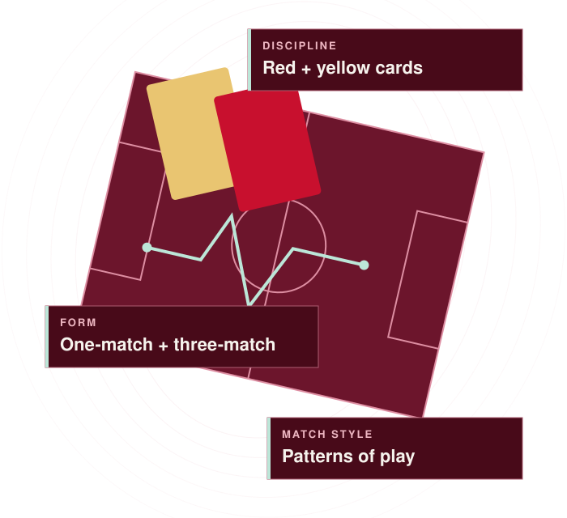

Form
What can be learned about single-match and three-match form? Overlapping three-match windows are not independent trials.
MATCH PULSE / RESEARCH IN PROGRESS
Research into the patterns of a match, with progress and limitations kept visible.
Open the research tracker
THE RESEARCH QUESTIONS
Match Pulse is a separate project from REDS. Its public tracker reports research progress in aggregate.
What can be learned about single-match and three-match form? Overlapping three-match windows are not independent trials.
Research into red and yellow cards, scored only where valid outcome labels are available.
Learned patterns of play. The groups have not been independently verified as tactical labels.
THE PUBLIC RECORD
Dated snapshots make the research record inspectable.
View research snapshotsVerified aggregate progress, historical baseline comparisons and counts of genuine pre-match checks, with evidence dates.
Historical replays remain separate from genuine pre-match forecasts. Confidence assigned during a replay is not an achieved live success rate.
Live reliability is not established. Individual match forecasts and model files remain private.
An estimate, subject to research review.